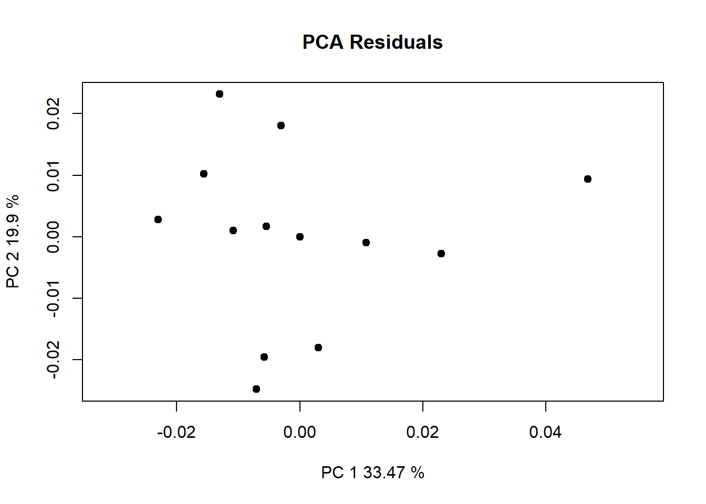

require(geomorph) #for GM analysis
require(SlicerMorphR) #for importing Slicer data
require(plyr) #for wireframe specs
require(dplyr) #for data processing/cleaning
require(tidyr) #for data processing/cleaning
require(skimr) #for nice visualization of data
require(knitr) #for qmd building
require(gapminder) #for plot aestheticsR_Analysis
Workflow
R_Analysis Workflow
I’m saving this string of code here for the time being d1Links <- define.links(Mshape.Coords, ptsize = 7, links = NULL)
This markdown file utilizes codechunks.
Load needed packages
Load needed data
SM.log.file = "Data/Analysis_8-15/analysis.log"
SM.log <- parser(SM.log.file)Warning in readLines(file): incomplete final line found on
'Data/Analysis_8-15/analysis.log'head(SM.log)$input.path
[1] "C:/Users/danny/Documents/git/Research_Methods/Data/Coordinates"
$output.path
[1] "C:/Users/danny/Documents/git/Research_Methods/Data/Analysis_8-15"
$files
[1] "LM_1575.fcsv" "LM_1601.fcsv" "LM_2270.fcsv" "LM_2274.fcsv" "LM_2294.fcsv"
[6] "LM_2303.fcsv" "LM_2317.fcsv" "LM_2343.fcsv" "LM_2368.fcsv" "LM_2380.fcsv"
[11] "LM_2458.fcsv" "LM_2463.fcsv" "LM_2467.fcsv" "LM_2487.fcsv" "LM_2508.fcsv"
$format
[1] ".fcsv"
$no.LM
[1] 55
$skipped
[1] FALSESM.output <- read.csv(file=paste(SM.log$output.path,
SM.log$OutputData,
sep = "/"))
SlicerMorph.PCs <- read.table(file = paste(SM.log$output.path,
SM.log$pcScores,
sep="/"),
sep=",", header = TRUE, row.names=1)
PD <- SM.output[,2]
if (!SM.log$skipped) {
no.LM <- SM.log$no.LM
} else {
no.LM <- SM.log$no.LM - length(SM.log$skipped.LM)
}
dem<-read.csv(paste("Data/dem.csv", sep=""))
dem ID Sex Age Ancestry
1 LM_1575 Male 60-70 Mix
2 LM_1601 Female 70-80 Caucasian
3 LM_2270 Male 70-80 Mix
4 LM_2274 Female 80-90 Mix
5 LM_2294 Female 80-90 Korean
6 LM_2303 Male 70-80 Caucasian
7 LM_2317 Male 60-70 Caucasian
8 LM_2343 Female 90-100 Japanese
9 LM_2463 Female 70-80 Portuguese
10 LM_2467 Female 70-80 Caucasian
11 LM_2380 Male 90-100 Caucasian
12 LM_2368 Female 50-60 Mix
13 LM_2458 Male 80-90 Caucasian
14 LM_2487 Male 80-90 Caucasian
15 LM_2508 Male 70-80 CaucasianMerge Demographic data with Landmark data
dat<- merge(SM.output, dem, by= "ID")
dat$ID <- as.factor(dat$ID)
dat$Sex <- as.factor(dat$Sex)
dat$Age <- as.factor(dat$Age)
dat$Ancestry <- as.factor(dat$Ancestry)
d1 <- dat %>% relocate(where(is.factor), .before = proc_dist)
skim(d1[1:6], )| Name | d1[1:6] |
| Number of rows | 15 |
| Number of columns | 6 |
| _______________________ | |
| Column type frequency: | |
| factor | 4 |
| numeric | 2 |
| ________________________ | |
| Group variables | None |
Variable type: factor
| skim_variable | n_missing | complete_rate | ordered | n_unique | top_counts |
|---|---|---|---|---|---|
| ID | 0 | 1 | FALSE | 15 | LM_: 1, LM_: 1, LM_: 1, LM_: 1 |
| Sex | 0 | 1 | FALSE | 2 | Mal: 8, Fem: 7 |
| Age | 0 | 1 | FALSE | 5 | 70-: 6, 80-: 4, 60-: 2, 90-: 2 |
| Ancestry | 0 | 1 | FALSE | 5 | Cau: 8, Mix: 4, Jap: 1, Kor: 1 |
Variable type: numeric
| skim_variable | n_missing | complete_rate | mean | sd | p0 | p25 | p50 | p75 | p100 | hist |
|---|---|---|---|---|---|---|---|---|---|---|
| proc_dist | 0 | 1 | 0.07 | 0.01 | 0.06 | 0.07 | 0.07 | 0.07 | 0.11 | ▇▂▁▁▁ |
| centeroid | 0 | 1 | 0.54 | 0.01 | 0.51 | 0.53 | 0.54 | 0.54 | 0.56 | ▃▅▇▆▂ |
Build array from Slicer data
Coords <- arrayspecs(SM.output[,-c(1:3)],
p=no.LM,
k=3)
dimnames(Coords) <- list(1:no.LM,
c("x","y","z"),
SM.log$ID)Run preliminary analyses
d1array.gpa <- gpagen(Coords, print.progress=FALSE)
summary(d1array.gpa)
Call:
gpagen(A = Coords, print.progress = FALSE)
Generalized Procrustes Analysis
with Partial Procrustes Superimposition
55 fixed landmarks
0 semilandmarks (sliders)
3-dimensional landmarks
2 GPA iterations to converge
Consensus (mean) Configuration
X Y Z
1 0.088944373 0.017112548 -0.041115700
2 0.086713372 -0.027345317 -0.040021395
3 -0.162443890 0.117405845 -0.018763507
4 -0.174582983 -0.097198168 -0.022417884
5 -0.072835774 0.005410136 -0.069411402
6 -0.061195686 0.003623447 0.194245899
7 0.072841404 0.014012998 0.026215460
8 0.070317703 -0.022981056 0.025318686
9 0.055937474 0.090097271 0.019004102
10 0.042264419 -0.095650389 0.016701833
11 0.041823214 0.056701035 -0.079885979
12 0.031724630 -0.059210552 -0.082664696
13 -0.088723351 0.137570447 0.047611249
14 -0.118946520 -0.126509256 0.050197105
15 -0.106340677 0.038772004 -0.080774211
16 -0.111675376 -0.023241438 -0.080421196
17 0.060162857 0.088468310 0.032156854
18 0.045968220 -0.095906425 0.030038061
19 0.056787889 0.093792044 0.037006096
20 0.041374212 -0.100759624 0.034888199
21 0.054626471 0.084012697 0.068863984
22 0.040931330 -0.091916980 0.066414210
23 0.090848557 -0.005977439 0.061501267
24 0.034752009 0.102310323 -0.008181600
25 0.020402348 -0.106164678 -0.009282208
26 -0.242708463 0.017510623 0.074039167
27 0.077062242 0.049744606 -0.013061859
28 0.070255052 -0.058779766 -0.013404260
29 0.078631253 0.055598228 0.055444973
30 0.067061074 -0.065688694 0.054134265
31 -0.085089793 0.110034274 -0.081992605
32 -0.100780129 -0.098243674 -0.082436290
33 -0.008952205 0.110512561 0.098894026
34 -0.029123494 -0.111124422 0.104723166
35 0.092003602 0.004661012 -0.055469829
36 0.090565965 -0.015323603 -0.055366853
37 0.088115891 -0.005829385 0.044062491
38 -0.247452919 0.021116598 0.002338568
39 -0.141391551 0.010524882 -0.083613989
40 -0.070052672 0.110397031 -0.028715450
41 -0.085465394 -0.102537393 -0.029127669
42 0.105687539 -0.005653951 -0.086204524
43 -0.015247706 0.105121853 0.123212577
44 -0.028721660 -0.106831839 0.118379151
45 0.100453940 -0.005586806 -0.065498736
46 -0.010619253 0.121897023 -0.023504552
47 -0.031223312 -0.119754233 -0.024495686
48 0.060985556 0.079391502 -0.048708201
49 0.048934846 -0.086426001 -0.050274464
50 0.076454649 0.043958386 -0.010324984
51 0.070609291 -0.053127943 -0.010492446
52 0.007195879 0.113277545 -0.030760860
53 -0.010007651 -0.113315049 -0.031915608
54 0.024282284 0.107561862 -0.013055180
55 0.008860913 -0.109513011 -0.014027568Mshape.Coords<-mshape(Coords)
head(Mshape.Coords) x y z
1 0.0142205765 -0.04501951 -0.024759076
2 -0.0096120764 -0.04619559 -0.024655985
3 0.0541053831 0.09325809 -0.003028978
4 -0.0608354106 0.08862981 -0.007258012
5 -0.0003492661 0.04146364 -0.034552159
6 -0.0031006576 0.02596099 0.105905142d1.pca<-gm.prcomp(d1array.gpa$coords)
plot(d1.pca) SlicerMorph.MS <- read.table(file = paste(SM.log$output.path,
SM.log$MeanShape,
sep="/"),
sep=",", header = TRUE, row.names=1)
par(mfrow= c(2,2))
plot(d1.pca, main = "PCA",
col=dat$Ancestry,
pch=16)
legend("topright", pch = 20, col=unique(dat$Ancestry), legend = unique(dat$Ancestry))
plot(d1.pca, main = "PCA",
axis1=1, axis2=3,
col=dat$Ancestry,
pch=16
)
legend("topright", pch = 20, col=unique(dat$Ancestry), legend = unique(dat$Ancestry))
plot(d1.pca, main = "PCA",
axis1=2, axis2=3,
col=dat$Ancestry,
pch=16
)
legend("topright", pch = 20, col=unique(dat$Ancestry), legend = unique(dat$Ancestry))
plot(d1.pca, main = "PCA",
axis1=3, axis2=4,
col=dat$Ancestry,
pch=16
)
legend("topright", pch = 20, col=unique(dat$Ancestry), legend = unique(dat$Ancestry))gdf <- geomorph.data.frame(PD,
Ancestry = dat$Ancestry,
Sex = dat$Sex,
Csize = dat$centeroid)
attributes(gdf)$names
[1] "" "Ancestry" "Sex" "Csize"
$class
[1] "geomorph.data.frame"lm.fit <- procD.lm(Coords~Ancestry*Sex, data=gdf)
Warning: Because variables in the linear model are redundant,
the linear model design has been truncated (via QR decomposition).
Original X columns: 10
Final X columns (rank): 7
Check coefficients or degrees of freedom in ANOVA to see changes.summary(lm.fit)
Analysis of Variance, using Residual Randomization
Permutation procedure: Randomization of null model residuals
Number of permutations: 1000
Estimation method: Ordinary Least Squares
Sums of Squares and Cross-products: Type I
Effect sizes (Z) based on F distributions
Df SS MS Rsq F Z Pr(>F)
Ancestry 4 0.0090834 0.0022709 0.37550 1.5073 1.63054 0.056 .
Sex 1 0.0019193 0.0019193 0.07934 1.2739 0.69194 0.234
Ancestry:Sex 1 0.0011348 0.0011348 0.04691 0.7532 -0.46291 0.675
Residuals 8 0.0120528 0.0015066 0.49825
Total 14 0.0241903
---
Signif. codes: 0 '***' 0.001 '**' 0.01 '*' 0.05 '.' 0.1 ' ' 1
Call: procD.lm(f1 = Coords ~ Ancestry * Sex, data = gdf)anova(procD.lm(Coords~Csize + Ancestry*Sex, data=gdf))
Warning: Because variables in the linear model are redundant,
the linear model design has been truncated (via QR decomposition).
Original X columns: 11
Final X columns (rank): 8
Check coefficients or degrees of freedom in ANOVA to see changes.
Analysis of Variance, using Residual Randomization
Permutation procedure: Randomization of null model residuals
Number of permutations: 1000
Estimation method: Ordinary Least Squares
Sums of Squares and Cross-products: Type I
Effect sizes (Z) based on F distributions
Df SS MS Rsq F Z Pr(>F)
Csize 1 0.0034837 0.0034837 0.14401 2.5410 2.97834 0.001 **
Ancestry 4 0.0082665 0.0020666 0.34173 1.5074 1.49535 0.079 .
Sex 1 0.0018098 0.0018098 0.07481 1.3200 0.70917 0.247
Ancestry:Sex 1 0.0010333 0.0010333 0.04272 0.7537 -0.43578 0.658
Residuals 7 0.0095969 0.0013710 0.39673
Total 14 0.0241903
---
Signif. codes: 0 '***' 0.001 '**' 0.01 '*' 0.05 '.' 0.1 ' ' 1
Call: procD.lm(f1 = Coords ~ Csize + Ancestry * Sex, data = gdf)plot(d1.pca, main = "PCA",
col=dat$Sex,
pch=16
)
d1Links <- "Data/d1Links.csv"
d1Links <- read.csv(d1Links)
save_data_location <- "Data/d1Links.rds"
saveRDS(d1Links, file = save_data_location)
plot(Mshape.Coords, d1Links[ ,2:3])